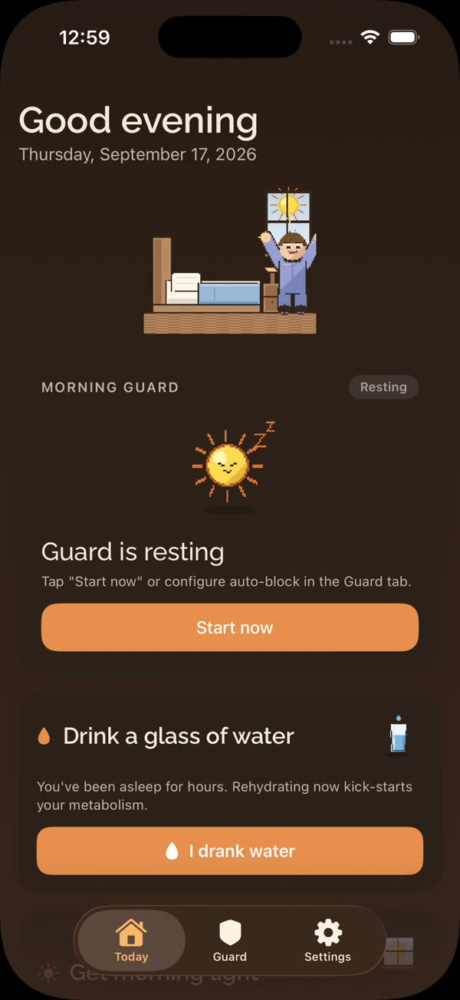
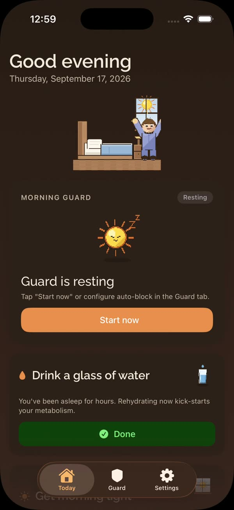
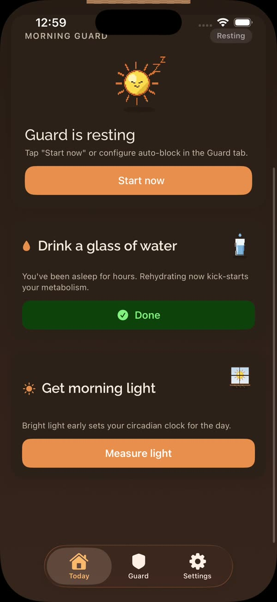
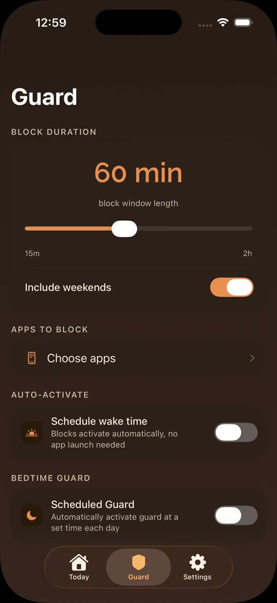
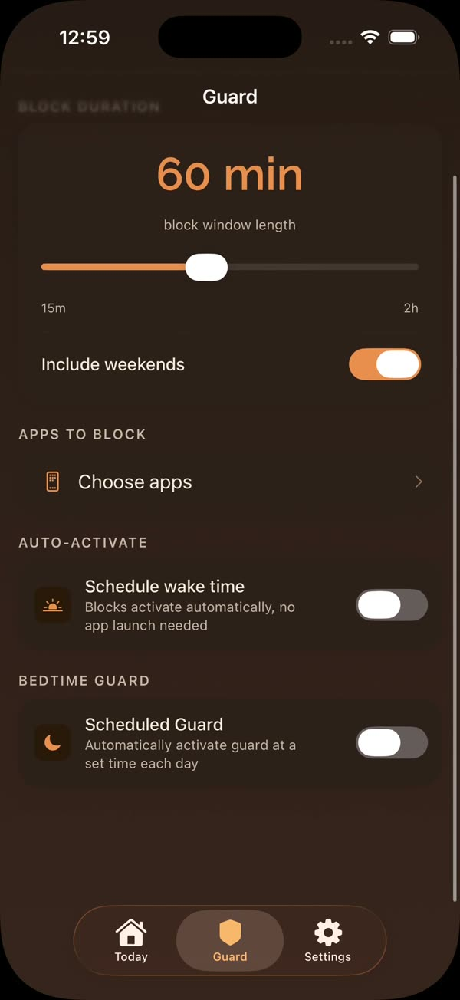
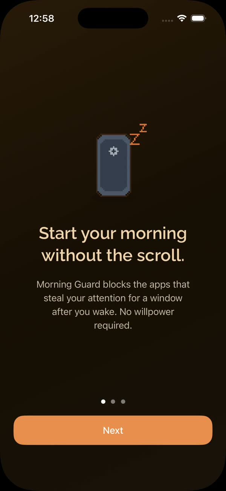
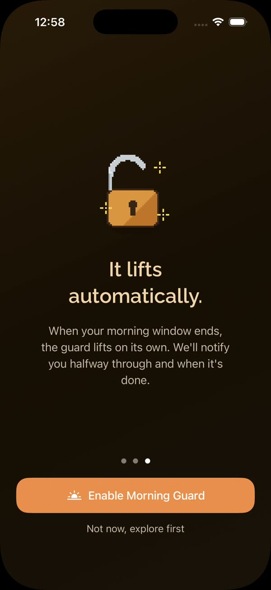

Morning Guard blocks the apps you pick for the first hour after you wake. It turns on without you, and it lifts without you. There is no timer to dismiss and nothing to remember, because you never open the app at all.
Seven of them. That is the whole app.







Choose which apps should be out of reach and when your morning starts. This is the only part that needs you, and it takes about a minute.
Morning Guard registers your window with iOS ahead of time, so the block is already in place at wake time. The app does not need to be running, or even to have been opened.
When your window ends the apps come back by themselves. You do not have to remember to switch anything off, and there is nothing to undo.
The same mechanism parents use for their kids, pointed at your own morning instead. A blocked app does not open. It is not a reminder or a nudge you can tap past.
The schedule is handed to iOS in advance and a background extension applies the block when the window starts. Morning Guard works whether or not you open it.
While the block is up you get exactly two suggestions: drink a glass of water, and get some real light on your face. The app measures the light with the camera so you know when you have had enough.
Every morning the guard runs counts as a day. There is a home-screen widget if seeing the number helps, and you can ignore it entirely if it does not.
There is no account, no server and no analytics, because there is nothing to send. Apple's design means Morning Guard cannot even read which apps you picked: the selection is stored as tokens only your device can interpret. The light readings are processed as you take them and never saved.
Read the full privacy policy